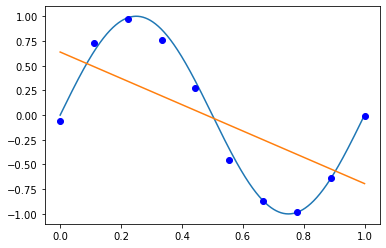

Statistical Learning Method Chapter 1
$\S 1$ 统计学习方法概论
统计学习
统计学习(Statistical Learning)是关于计算机基于数据构建概率统计模型并运用模型对数据进行预测与分析的一门学科。统计学习也称为统计机器学习(Statistical Machine Learning)。
监督学习
基本概念
输入空间、特征空间与输出空间
在监督学习中，将输入与输出所有可能性的集合分别称为输入空间(Input Space) 与输出空间(Output Space)。输入与输出空间可以是有限元素的集合，也可以是整个欧氏空间。
每个具体的输入时一个实例(Instance)，通常由特征向量(Feature Vector)表示。
第1章例题及习题解答
例1.1实现
用目标函数$y=sin2{\pi}x$, 加上一个正态分布的噪音干扰，用多项式去拟合
1 | import numpy as np |
1 | def real_func(x): |
1 | #生成十个点 |
M = 0
1 | p_lsq_0 = fitting(M=0) |
Fitting Parameters: [-0.02758859]
M = 1
1 | p_lsq_1 = fitting(M=1) |
Fitting Parameters: [-1.33119752 0.63801017]

M = 3
1 | p_lsq_3 = fitting(M=3) |
Fitting Parameters: [ 21.12873508 -31.44187437 10.44269382 -0.05514685]
M= 9
1 | p_lsq_9 = fitting(M=9) |
Fitting Parameters: [-1.40054714e+04 6.29342044e+04 -1.18600256e+05 1.21638867e+05
-7.36916417e+04 2.67652169e+04 -5.61456611e+03 5.90187108e+02
-1.64814992e+01 -6.32808245e-02]
此时，虽然拟合的多项式能通过所有的点，但是显然已经过拟合。当发生过拟合时，训练误差会减小，但是测试误差会增大。
Hoeffding不等式
Hoeffding（霍夫丁）不等式
令$X_1, X_2, \ldots, X_N$是独立随机变量，且$X_i \in {a_i, b_i}$;$\bar{X}$是$X_1, X_2, \ldots, X_N$的均值，则对于任意$t>0$,下列不等式成立：
习题1
1.1 统计学习方法三要素
说明伯努利模型的极大似然估计以及贝叶斯估计中的统计学习方法三要素
伯努利模型是定义在取值为0或1的随机变量上的概率分布。假设观测到伯努利模型n次独立的数据生成结果，其中k次的结果为1，这时可以用极大似然估计或贝叶斯估计来估计结果为1的概率
极大似然估计:
模型：$\mathcal{F} = {f | f_p(x) = p^x(1-p)^{(1-x)} }$
策略：似然函数的最大化
算法：
解法：
伯努利模型的似然函数
对上述式子两边求导，得：
解得$p = \frac{k}{n}$
贝叶斯估计：
模型：$\mathcal{F} = {f | f_p(x) = p^x(1-p)^{(1-x)} }$
策略：求参数期望
算法：
1.2 经验风险最小化
通过经验风险最小化推导极大似然估计：
证明模型是条件概率模型，当损失函数是对数损失函数时，经验风险最小化等价于极大似然估计
证明：
设模型的条件概率分布为$P_{\theta} (Y|X)$,极大似然估计的似然函数为：
对上述式子两边求对数，得：
得证.